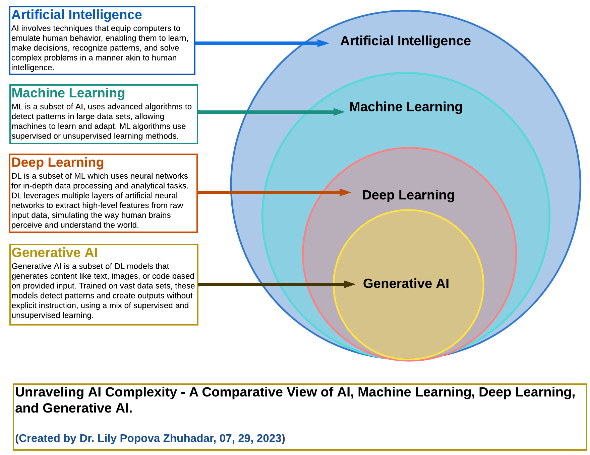
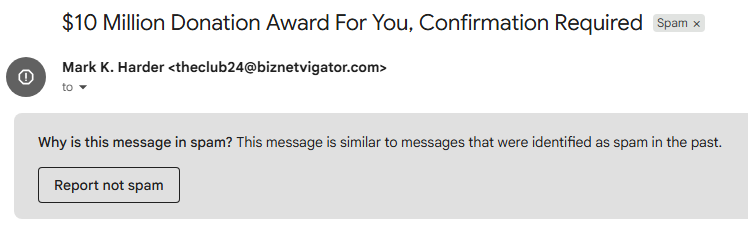
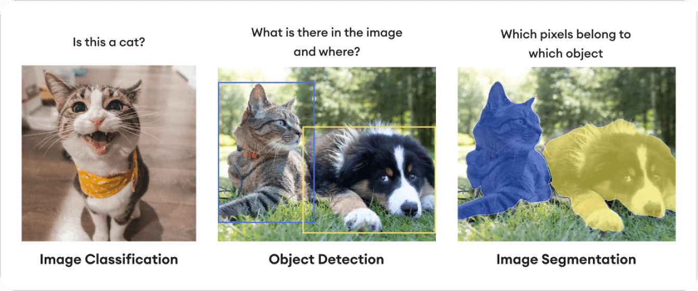
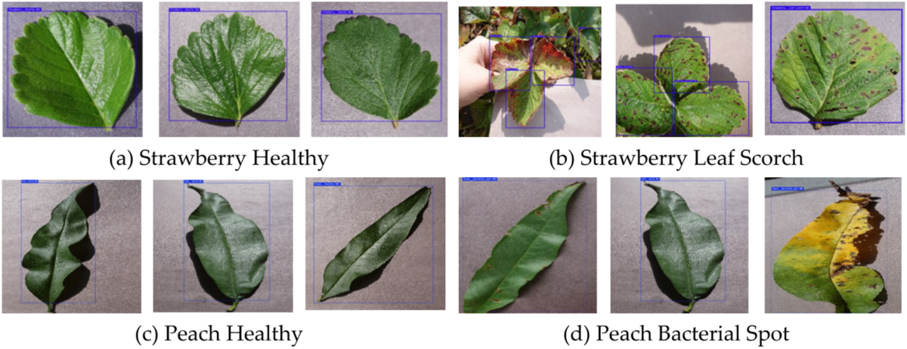

From playing tennis outside to monitoring plants indoors
Artificial intelligence (AI) means making computers perform tasks that seem to require human-like thinking.
Recognize objects, faces, plants, or disease spots.
Choose an action based on information.
Understand text, speech, or images.
Imagine a greenhouse assistant who never sleeps.
It watches sensor data, checks plant images, notices problems, and suggests actions.
AI is not magic. It is a tool that uses rules, data, or learned patterns.
Machine learning (ML) is a way for computers to learn patterns from data instead of only following hand-written instructions.

AI is a broad field. Machine learning is one way to do AI. Deep learning is a type of machine learning. Generative AI is a type of deep learning.
Input data has labels. Example: plant image → healthy or stressed.
No labels. Example: group greenhouse zones by light and temperature.
Try actions and receive rewards. Example: choose lighting strategy that saves energy and grows plants.
| Word | Meaning | Greenhouse example |
|---|---|---|
| Data | Measurements or examples | Temperature, humidity, light, pH, plant images |
| Feature | A useful input column | Temperature = 27°C, PAR = 350 µmol/m²/s |
| Label | The answer we want the model to learn | Healthy/stressed, play tennis yes/no, water use amount |
| Model | The learned pattern | A rule, tree, equation, neural network, or classifier |
Question: Based on weather, should we play tennis?
Inputs: outlook, temperature, humidity, wind.
Label: play tennis = yes or no.
| Outlook | Temperature | Humidity | Wind | Play? |
|---|---|---|---|---|
| Sunny | Hot | High | Weak | No |
| Overcast | Hot | High | Weak | Yes |
| Rain | Mild | High | Weak | Yes |
| Rain | Cool | Normal | Strong | No |
| Sunny | Cool | Normal | Weak | Yes |
A decision tree is like a flowchart.
It learns which questions are most useful from examples.
At the end, it gives a prediction.
import pandas as pd
from sklearn.tree import DecisionTreeClassifier
from sklearn.preprocessing import OneHotEncoder
from sklearn.compose import ColumnTransformer
from sklearn.pipeline import Pipeline
X = pd.DataFrame([
["Sunny", "Hot", "High", "Weak"],
["Overcast", "Hot", "High", "Weak"],
["Rain", "Cool", "Normal", "Strong"]
], columns=["Outlook", "Temp", "Humidity", "Wind"])
y = ["No", "Yes", "No"]
model = Pipeline([
("encode", ColumnTransformer([("cat", OneHotEncoder(), X.columns)])),
("tree", DecisionTreeClassifier(max_depth=3))
])
model.fit(X, y)
print(model.predict(pd.DataFrame([["Sunny", "Cool", "High", "Strong"]], columns=X.columns)))
Input: words in an email, sender, links, attachments.
Label: spam or not spam.
Model learns: patterns often seen in spam messages.
In image classification, the computer learns from many labeled pictures.
For greenhouse use, the labels might be healthy, nutrient deficiency, or disease symptom.

Recommend a movie based on what similar people liked.
Recommend a product based on past choices and similar users.
Sometimes we do not have labels.
The computer can still look for groups in the data.
Example: group greenhouse locations into cool/dim, warm/bright, and middle zones.
import numpy as np
from sklearn.cluster import KMeans
# Each row is one greenhouse location: [light_PPFD, temperature_C]
X = np.array([
[120, 21], [150, 22], [300, 25],
[350, 26], [230, 23], [260, 24]
])
model = KMeans(n_clusters=3, random_state=0, n_init="auto")
labels = model.fit_predict(X)
print("Zone labels:", labels)
print("Zone centers:", model.cluster_centers_)Classification predicts a category: healthy or stressed, play or not play.
Regression predicts a number: tomorrow’s water use, plant height, or expected yield.
import pandas as pd
from sklearn.linear_model import LinearRegression
data = pd.DataFrame({
"temperature_C": [20, 22, 24, 26, 28],
"humidity_percent": [80, 75, 70, 65, 60],
"light_PPFD": [150, 190, 250, 320, 390],
"water_use_mL": [45, 52, 63, 78, 94]
})
X = data[["temperature_C", "humidity_percent", "light_PPFD"]]
y = data["water_use_mL"]
model = LinearRegression()
model.fit(X, y)
new_day = pd.DataFrame({"temperature_C": [26], "humidity_percent": [65], "light_PPFD": [330]})
print("Predicted water use:", model.predict(new_day)[0])
Input: plant images from a camera.
Model: image classifier.
Output: healthy, yellowing, wilting, or possible nutrient stress.
Action: ask a human to inspect or adjust nutrients/water.
A sensor can fail, drift, or report impossible values.
AI can help notice when a reading looks unusual compared with normal behavior.
Example:
If pH usually stays near 6.2 but suddenly jumps to 9.8, the system should not blindly trust it.
import numpy as np
ph = np.array([6.1, 6.2, 6.3, 6.2, 6.1, 9.8, 6.2, 6.3])
mean = np.mean(ph)
std = np.std(ph)
z_score = (ph - mean) / std
anomaly = np.abs(z_score) > 2
print("pH readings:", ph)
print("Strange readings:", ph[anomaly])Wrong sensor data can teach wrong patterns.
A model may fail on examples it has never seen.
Some models are hard to understand.